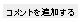
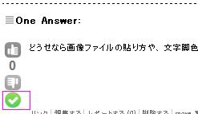

|
ライフサイエンスQAの質疑を行う上での注意点はありますか？ また、質疑の書き方の参考情報はありますか？ ライフサイエンスQA上の質疑応答について、 回答とコメントの使い分け、 質問のクロージングの方法などをご存知ないかたも 多くおられるのではないかと思っております。 ちなみに、コメントをつけるには画面右下のボタンをクリックします。 質問の受付を終了するには、有効な回答の左端にあるチェックボタンを押し質問をクロージングします。  使い方は一つではないとは思うのですが、 2011/05/28-05/29にNGS現場の会第一回研究会の開催時に使い方の一例を紹介するため、 この質問を、適宜画面キャプチャーしながら作成したHowToページをこちら作成しました。 尚、上記の操作の目的で自問自答の質問を投げることを ライフサイエンスQAの管理者様の許可を得て行っております。 |
|
何人かの方にご意見いただき、以下の注意点をいただきました。
※ただし、上記のような堅苦しいルールを気にしすぎて、質問できなくなるのは本末転倒ですので、 まずは質問、気付いた時に修正というのはいかがでしょうか。後で修正できる仕組みは用意されていますので。 |

どうせなら画像ファイルの貼り方や、 文字脚色の方法も記載してはどうでしょうか？
asurainさんダミー回答のご協力ありがとうございます。質問文を編集して画像ファイルの貼り方、文字脚色のデモをしてみます。